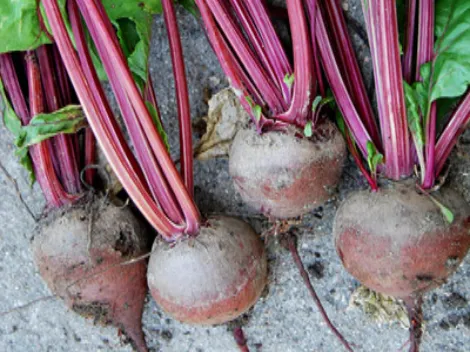
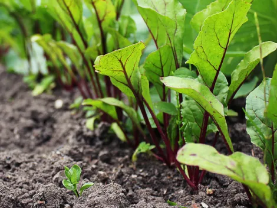

Beterraba (Beta vulgaris L.)
A beterraba é uma das principais hortaliças cultivadas no Brasil, com diversos biótipos. A beterraba hortícola — também chamada de beterraba vermelha ou de mesa — é o biótipo cultivado no país. Suas raízes e folhas são utilizadas na alimentação humana e a cor vermelho-arroxeada característica deve-se às betalaínas, pigmentos naturais antioxidantes com crescente valor nutricional e industrial.
Descrição
Planta herbácea de ciclo anual ou bianual, com sistema radicular pivotante que pode atingir até 60 cm de profundidade. Desenvolve raiz do tipo tuberosa púrpura pelo intumescimento do hipocótilo (caule localizado logo abaixo dos cotilédones). A coloração vermelho-escura típica das cultivares comerciais deve-se ao pigmento betalaínas, cor presente também nas nervuras e nos pecíolos das folhas.
Principais Características:
- Nome científico: Beta vulgaris L.
- Família botânica: Chenopodiaceae.
- Origem: Sul e leste da Europa e norte da África.
- Hábito de crescimento: Herbácea; raiz pivotante até 60 cm de profundidade, com poucas ramificações laterais.
- Folhas/Pecíolos: Largas, pecioladas, com nervuras e pecíolos de coloração avermelhada.
- Flor: Pequena, hermafrodita, agrupada em espigas na fase reprodutiva.
- Fruto (semente): Glomérulo (fruto botânico multigérmico) com 2 a 6 embriões; 55–60 sementes por grama.

Variedades Recomendadas
| Cultivar / Híbrido | Empresa | Destaque Técnico | Ciclo (dias) |
|---|---|---|---|
| Early Wonder 2000 | Agristar | Ciclo precoce, raízes uniformes, boa resistência a chuva. Folhagem verde intensa e ótima sanidade. | 70 – 80 |
| Fortuna | Agristar | Alto potencial produtivo, raízes uniformes, ótima coloração interna e externa, inserção foliar pequena. | 75 – 85 |
| Stays Green | Agrocinco | Folhagem verde-escura brilhante (40–45 cm); baixa presença de anéis brancos; alta tolerância à cercosporiose. | — |
| Katrina | Feltrin | Globular (8–10 cm); excelente uniformidade; sementes descortiçadas e calibradas. | 60 – 70 |
| Tall Top Early Wonder | Feltrin | Globular (8–10 cm); excelente adaptação a diversas regiões de cultivo. | 60 – 70 |
| All Green | Hortec | Alta resistência à cercosporiose; folhas verdes no ponto de colheita; cor vermelho intenso interno e externo. | 60 – 80 |
| Itapuã | ISLA / Horticeres | Desenvolvida no Brasil; pele lisa; baixa incidência de anéis brancos; resistente à cercosporiose. | 60 – 75 |
| Maravilha | ISLA | Alta produtividade; pouca incidência de anéis brancos; fácil formação de maços para comercialização. | 65 – 80 |
| Modana | Tecnoseed | Monogérmica; 11–13 °Brix — ideal para indústria; melhor desempenho no inverno. | 55 – 65 |
| Bonel | Vilmorin | Cultivar rústica; pele lisa e brilhante; ausência de anéis brancos; boa tolerância à cercosporiose. | 55 – 65 |
| Rubius F1 ⊕ | Agristar | Híbrido vigoroso; coloração intensa; ausência de anéis brancos; pele lisa. | 75 – 85 |
| Scarlet Super F1 ⊕ | Agristar | Raízes de coloração intensa e uniforme; ausência de anéis brancos. | 80 – 95 |
| Zeppo ⊕ | Agrocinco | Alta resistência à cercospora; ombro vermelho intenso; indicada para mercado fresco e processamento o ano todo. | — |
| Boro F1 ⊕ | Bejo | Raízes muito lisas e uniformes; indicada para indústria de conservas; folhagem permite venda em maços. | 80 – 85 |
| Redondo F1 ⊕ | Bejo | Altamente produtivo e uniforme; raízes muito redondas; folhas muito vigorosas e de boa sanidade. | 90 – 95 |
| Rubra ⊕ | Feltrin | Elevado teor de sólidos solúveis (°Brix); tolerância a míldio, oídio, rizoctônia e cercospora. | 70 – 80 |
| Cabernet ⊕ | Horticeres | Tolerância à cercospora, míldio e oídio; inserção foliar pequena; cor vermelho intenso sem halos esbranquiçados. | 60 – 70 |
| Merlot ⊕ | ISLA | Resistência à cercospora e míldio; cor vermelho-escuro intenso; raízes uniformes. | 80 |
| Kestrel ⊕ | Sakata | Resistência moderada a Cercospora, míldio, oídio e rizoctônia; diâmetro 6–7 cm; indicada para semeadura direta e transplante. | 60 – 70 (verão) / 80 – 90 (inverno) |


Manejo e Plantio
- Solo: Areno-argiloso ou argilo-arenoso, friável e bem drenado. pH em torno de 6,5 (80% de saturação por bases). Solos muito argilosos deformam as raízes.
- Temperatura: Germinação ótima entre 10 °C e 15 °C; melhor desenvolvimento da parte aérea em torno de 20 °C. Evitar cultivos acima de 25 °C — causa anéis claros nas raízes e favorece doenças.
- Época de semeadura: Altitude abaixo de 400 m → abril a junho; entre 400 e 800 m → fevereiro a junho; acima de 800 m → o ano todo.
- Implantação: Por semeadura direta (até 12 kg/ha) ou transplante de mudas em bandejas de 288 células (~1–2 kg/ha). Profundidade ideal: 1–2 cm. O transplante eleva produtividade e qualidade.
- Calagem: Aplicar corretivos com PRNT acima de 70%, com 60–90 dias de antecedência, incorporando até 20 cm de profundidade.
- Adubação orgânica: 30–50 t/ha de esterco de curral curtido (dose maior em solos arenosos), ou ¼ da quantidade com esterco de galinha.
- Adubação mineral de plantio: 20 kg/ha de N; P₂O₅ e K₂O conforme análise de solo; 2–4 kg/ha de boro.
- Adubação de cobertura: 80–160 kg/ha de N e 40–80 kg/ha de K₂O, parcelados em 3 aplicações (15, 30 e 50 dias após germinação).
- Irrigação: Período crítico nos primeiros 60 dias. Repor 40–50% da ETo até a 2ª semana pós-emergência; 75–85% durante o ciclo; e 105–120% nas 4 semanas antes da colheita.
- Controle de plantas daninhas: Período crítico entre a 2ª e 6ª semanas após emergência (perdas de 79–96%). Usar capina manual, herbicida metamitrona (Goltix 700 WG, 4–6 kg/ha) ou lança-chamas (orgânicos).
- Colheita: 70–110 dias após semeadura, quando as raízes atingem 6–8 cm de diâmetro. Produtividade: 500–1.800 caixas K (22 kg) por hectare.
Manejo Integrado de Pragas e Doenças (MIP)
| Problema | Agente Causal | Sintomas | Manejo Recomendado |
|---|---|---|---|
| Tombamento (Damping-off) | Rhizoctonia solani, Pythium spp., Fusarium spp., Phytophthora spp. | Tombamento de plântulas no coleto, em reboleiras; redução do estande; favorecido por alta umidade e temperaturas entre 15–25 °C. | Rotação de cultura; matéria orgânica no plantio; sementes sadias; evitar solos compactados e encharcados; manejar adequadamente a irrigação inicial. |
| Cercosporiose (Mancha das Folhas) | Cercospora beticola Sacc. | Manchas arredondadas (4–5 mm), bordos púrpura e centro claro nas folhas velhas. Em alta intensidade, pode causar necrose total e morte de plantas. | Rotação de cultura; cultivares tolerantes; adubação equilibrada; fungicidas registrados a cada 7–14 dias; Calda Viçosa. |
| Nematoides (Galhas Radiculares) | Meloidogyne arenaria, M. incognita, M. javanica | Redução de crescimento, amarelecimento, murcha nos horários quentes; galhas ("pipoca") nas raízes tuberosas. | Rotação com crotalária (adubação verde); evitar trânsito de máquinas em áreas infestadas; compostagem orgânica para aumentar microbiota do solo. |
| Podridão Branca | Sclerotium rolfsii Sacc. | Murcha nos horários quentes; podridão de raízes; micélio branco cotonoso e escleródios (~2 mm) no colo da planta. | Medidas preventivas gerais; aração profunda; evitar solos compactados com baixo teor de matéria orgânica. |
| Mancha de Phoma | Phoma betae Frank | Lesões circulares pardo-escuras (1–2 cm) em folhas velhas; pontos pretos visíveis em condições de alta umidade. | Apenas medidas preventivas: sementes sadias, rotação de cultura, manejo adequado da umidade. |
| Mancha Bacteriana da Folha | Xanthomonas campestris pv. betae | Lesões com aspecto encharcado nos limbos foliares; tornam-se translúcidas e coalescentes; nervuras secundárias enegrecidas. | Apenas medidas preventivas. |
| Murcha Bacteriana | Pseudomonas solanacearum | Murcha acentuada dos folíolos mais velhos, amarelecimento, nanismo e produção de raízes adventícias. | Apenas medidas preventivas; evitar ferimentos nas raízes causados por nematoides, insetos ou tratos culturais. |
| Lagarta Rosca | Agrotis ipsilon | Seccionamento da haste de plântulas na fase inicial da cultura (hábito noturno). | Monitoramento constante; risco maior em rotações com milho. |
| Vaquinha / Mosca Minadora | Diabrotica speciosa / Liriomyza sp. | Dano foliar; ocorrência restrita a alguns locais e anos de desequilíbrio populacional. | Monitoramento; intervenção somente quando há dano econômico confirmado. |